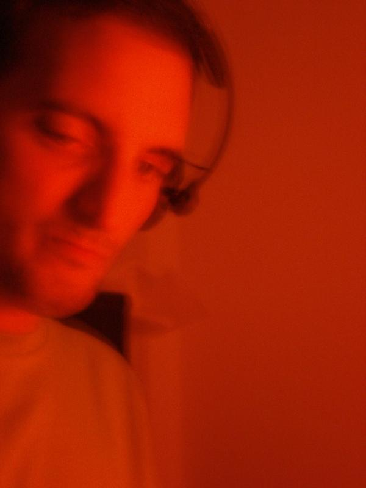

Comienzos
Mis comienzos en el mundo de la música empezaron en 1990 cuando nos juntamos unos amigos para formar un grupo que algo más tarde se llamó Sr. Chinarro.
Formé parte del grupo como bajista hasta finales de 1994, año en que me separé para formar Lupa junto a Juan Fco. Morato. Después de una maqueta grabada con unos medios paupérrimos, algunos directos inolvidables, e incluso ser finalistas del Villa de Bilbao, el grupo se disolvió.
Posteriormente, entre 1997 y 2000, volví a colaborar con Sr. Chinarro, esta vez como teclista en el Festival Internacional de Benicàssim (en dos ocasiones), Santander, Granada y algún otro.
Grabaciones
Sr. Chinarro - Primera maqueta (1991)
Sr. Chinarro - Segunda maqueta (1991)
Sr. Chinarro - El Colectivo Karma (El Colectivo Karma, 1992)
Sr. Chinarro - Pequeño Circo EP (Acuarela Records, 1993)
Pequeñas Cosas Furiosas - Cubierta de melaza (1995)
Lupa - Primera maqueta (1996)


Cine


Desde 1992 colaboro con el director de cine Juan Jose Moreno, participando de una manera u otra en sus primeros metrajes. En esos años grabamos La mano en el congelador (1992) y Materia gris (1993).
En 1995 hice la banda sonora del cortometraje Entiendes...? y unos años después la de la pelicula Las primeras veces (Juan J. Moreno, 2001).
Actualidad

Desde el principio del nuevo siglo mi interés por la música electrónica va in-crescendo, en 2005 comienzo a pinchar y en 2008 a producir mis primeros temas de música electrónica y actualmente lo compagino con la creación de bandas sonoras originales libres de derechos para videos, cortos, webs, videojuegos, etc.
Ejemplo de trabajo realizado.